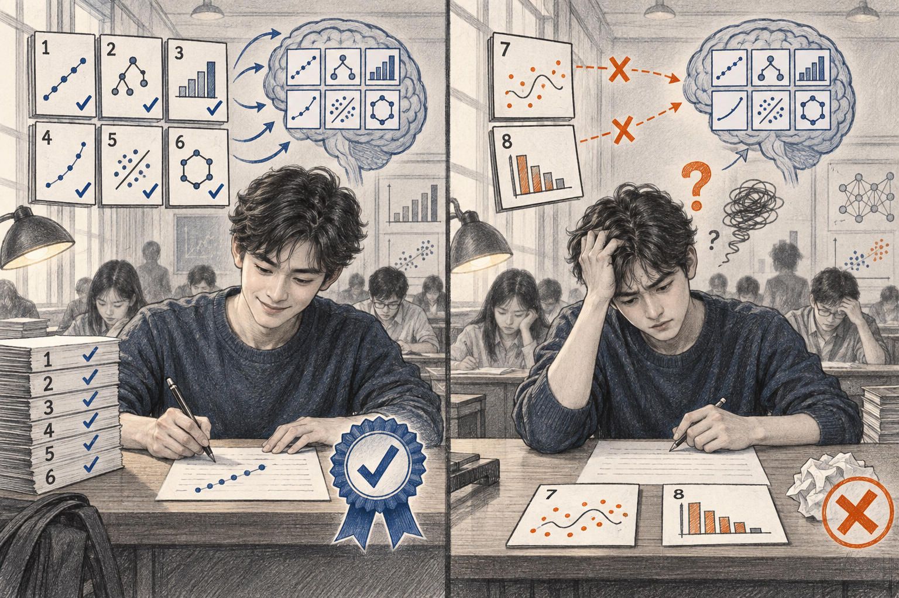
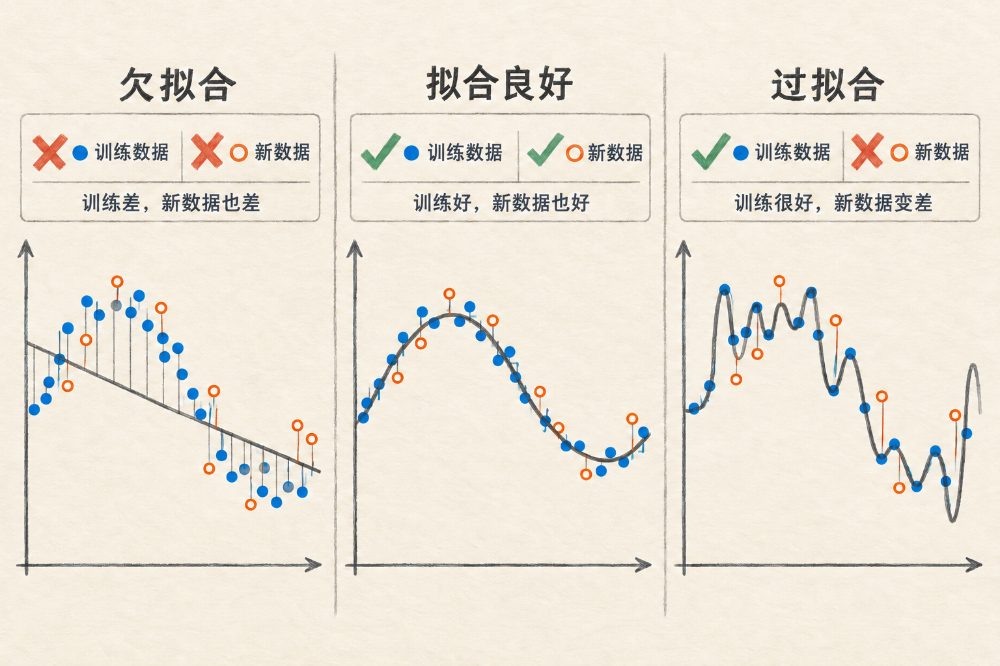
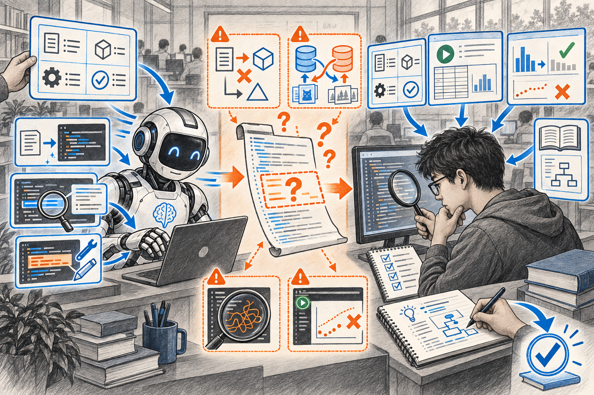
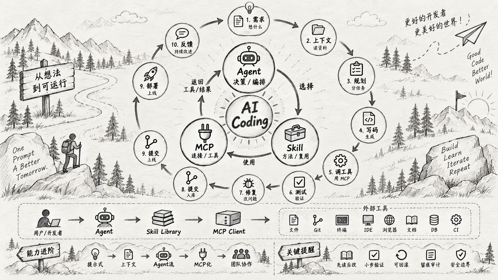

核心是体力、熟练和认路：怎样更快把人送到目的地。
第 1 讲 · 机器学习导论：学习范式与 AI 辅助编程
导论：这门课学什么
第 1 章 · 导论。本课程一共十章。本章包括三部分：机器学习的范式与基本术语、全课章节概览、AI 辅助编程的四步约定。
本章围绕两个问题展开：什么是机器学习？如何利用 AI 帮助我们学习机器学习？
第 1 讲 · 机器学习导论：学习范式与 AI 辅助编程
第 1 章 · 导论。本课程一共十章。本章包括三部分：机器学习的范式与基本术语、全课章节概览、AI 辅助编程的四步约定。
本章围绕两个问题展开：什么是机器学习？如何利用 AI 帮助我们学习机器学习？
第 1 讲 · 机器学习导论：学习范式与 AI 辅助编程
机器学习与概率统计 · 第 1 讲
接下来的十几页，不是想教你“少学一点”。它想讨论的是：当表达一个想法的成本变低以后，什么能力反而更重要？
第 1 讲 · 机器学习导论：学习范式与 AI 辅助编程
我学过的技术，很多已经进博物馆了
第 1 讲 · 机器学习导论：学习范式与 AI 辅助编程
一个不完全严肃、但很有用的类比
核心是体力、熟练和认路：怎样更快把人送到目的地。
有了更强的工具，选方向、设计路线、判断是否安全，反而更重要。
不是“编程消失了”，而是“编程”正在从纯手工实现，变成更完整的创造与判断。
第 1 讲 · 机器学习导论：学习范式与 AI 辅助编程
一个现实问题，往往从“找不到”开始
于是你决定读：
第 1 讲 · 机器学习导论：学习范式与 AI 辅助编程
AI THINKING / 先组织，再行动
第 1 列 第 2 列 第 3 列
┌ 代码大全 ┐ ┌ 论语 ┐ ┌ 庄子 ┐
│ 算法导论 │ │ 理想国 │ │ 心经 │
│ 设计模式 │ │ 沉思录 │ │ 瓦尔登湖 │
└────────┘ └────────┘ └────────┘
《般若波罗蜜多心经》在哪里？
第 3 列，从上往下第 2 本。
AI 不替你面对书架；它帮你把书架变成可以提问、可以行动的信息。
第 1 讲 · 机器学习导论：学习范式与 AI 辅助编程
MODELGO / 开源项目协作
我用 Claude 生成了网页动画，用在开源项目 ModelGo 的网站底部。
第 1 讲 · 机器学习导论：学习范式与 AI 辅助编程
所以，Vibe Coding 到底改变了什么？
以前常常是：先学很久，才有资格做一个作品。现在可以先做一个小原型，再在做的过程中发现：真正的问题是什么？谁会用？它到底好不好？
第 1 讲 · 机器学习导论：学习范式与 AI 辅助编程
“与其预测什么会变，不如关注什么不变。”— Morgan Housel · Same as Ever
技术栈 3 年一换，但这些能力永远不会过时：
观察、思考、提出好问题
架构思维、系统设计
知道什么是好的、什么是对的
第 1 讲 · 机器学习导论：学习范式与 AI 辅助编程
BEFORE WE BUILD / 先把入口准备好
第 1 讲 · 机器学习导论：学习范式与 AI 辅助编程
TEAM DESIGN / 分组规则
4–5组长负责推进沟通与节奏，不是唯一写代码的人。我们会按兴趣、经验与角色意愿尽量做互补分组。
今天说明分组方式；名单与后续组内沟通安排将另行发布。
第 1 讲 · 机器学习导论：学习范式与 AI 辅助编程
ONE LAST THING
Vibe Coding 不是终点，也不是捷径。它只是让你更早把好奇、观察和判断，变成一个别人也能看见的东西。
第 1 讲 · 机器学习导论：学习范式与 AI 辅助编程
凭直觉回答一个问题：垃圾邮件过滤器是怎么认出垃圾邮件的？
拦截垃圾邮件，最直接的办法是预先设置关键词规则：“标题含‘中奖’就拦”。发件人换个写法（“中 奖”加空格、改成图片），原有规则就可能失效，需要人工继续补充。
把 1 万封人工判定过的邮件交给算法，算法根据各类词语与邮件类别的关系估计判断规则，再用这些规则分类新邮件。加入新标注数据后，可重新训练模型更新规则。
机器学习（machine learning）：算法利用数据估计可用于预测的模型或规则，再用它处理新数据。垃圾邮件拦截就是这一类：模型从带有判定结果的历史邮件中学习，再判断新邮件是否为垃圾邮件。
一封新邮件标题写着“中 奖”（中间加了空格）：两种方法可能分别如何处理？请各用一句话回答。
第 1 讲 · 机器学习导论：学习范式与 AI 辅助编程
收件箱每天进几百封邮件，广告和钓鱼的要拦下来。手里有：历史邮件，每封都带人工判定的“垃圾 / 正常”。
一套 70 平、离地铁 500 米的房子值多少钱？手里有：近期成交记录，每套都带成交价。
视频平台想给不同口味的人推不同内容。手里有：几百万人的观看记录，但没人标过“口味”。
共同点：手里都有一批数据，都希望从数据中获得可用的信息。差别：前两个任务的每条数据都带目标值（可暂时理解为“答案”，即判定结果或成交价），第三个只有记录、没有答案。
你会怎么分类这三个任务？
第 1 讲 · 机器学习导论：学习范式与 AI 辅助编程
按照训练数据和反馈信号的形式，可以区分以下五种常见学习范式。
| 范式 | 已有数据或反馈 | 主要任务 | 生活例子 |
|---|---|---|---|
| 监督学习（supervised learning） | 每个输入样本都有标签 | 学习输入与标签之间的关系 | 人工判定过垃圾/正常的邮件 |
| 无监督学习（unsupervised learning） | 只有输入，没有标签 | 发现数据中的结构 | 没有标签的观看记录 → 用户分群 |
| 半监督学习（semi-supervised learning） | 少量有标签数据＋大量无标签数据 | 同时利用少量有标签数据和大量无标签数据 | 相册里标过几次人名，其余照片自动归类 |
| 自监督学习（self-supervised learning） | 监督信号由数据自身构造 | 利用构造的训练目标学习数据表示 | 遮住一个词让模型猜（完形填空） |
| 强化学习（reinforcement learning） | 与环境交互得到奖励信号 | 学习能够获得较高累计奖励的决策 | 根据对局输赢学习下棋策略 |
对比学习（contrastive learning）是自监督学习的常见方法：让相似样本在表示空间中更接近，让不相似样本更远（例如，同一张照片的两种裁剪可视为相似样本），通常不需要额外的人工标签。本课以监督学习为主要内容（第 2–8 章）；第 9 章介绍无监督学习，第 10 章介绍自监督学习与预训练模型；强化学习只介绍基本概念。
外卖平台保存了历史订单的配送距离、下单时段、天气和实际送达时间。现在要预测一笔新订单是否会在 45 分钟内送达，属于哪种学习范式？如果改为预测这笔订单具体需要多少分钟，又属于监督学习中的哪类任务？
第 1 讲 · 机器学习导论：学习范式与 AI 辅助编程
监督学习的预测目标有不同形式，其中最常见的是回归与分类。连续数值通常按回归处理，有限类别通常按分类处理。
例如房价 468.5 万元、明天气温 23 摄氏度、外卖预计 38 分钟送达。预测值之间可以比较大小并计算差值。
例如垃圾/正常、手写数字 0–9、会员/非会员。无序类别的编号不表示大小关系；具有顺序的等级类别还需要考虑类别之间的顺序。
有些任务需要结合使用目的判断：预测“年龄几岁”是回归，预测“年龄段（少年/青年/中年）”是分类。
在“情境：三个真实任务”一页中，垃圾邮件识别是分类，房价预测是回归。评论情感判断同样属于分类，第 10 章会使用预训练模型完成这一任务。
预测一部电影的具体评分属于哪类任务？预测“好评/差评”又属于哪类任务？
第 1 讲 · 机器学习导论：学习范式与 AI 辅助编程
没有标签的数据也可以用于聚类和降维等任务，具体算法与评估方法将在第 9 章介绍。
例如，根据几百万用户的观看记录把相似用户分为若干组，再针对不同用户组推荐内容。算法依据数据中的相似性形成分组，不需要预先提供每个样本所属的类别。
把高维数据转换为较少维度的表示，同时尽量保留主要信息。例如，把包含 64 个像素特征的手写数字转换为 2 个坐标，以便在平面上观察不同数字的分布。
两个任务回答的问题不同：聚类研究如何根据相似性划分样本，降维研究如何用较少的维度表示数据并保留主要结构。
把 64 维数据转换为 2 维表示，会不会丢失信息？
通常会丢失一部分信息。降维的目标是在减少维度的同时尽量保留与任务有关的主要结构。第 9 章将介绍相应的评价方法。
第 1 讲 · 机器学习导论：学习范式与 AI 辅助编程
第 1 讲 · 机器学习导论：学习范式与 AI 辅助编程
8 辆汽车的马力、车重与每加仑行驶英里数 mpg（样本数 n=8，特征数 d=2）：
| 车型 | 马力 | 车重(lb) | mpg |
|---|---|---|---|
| datsun 1200 | 69 | 1613 | 35.0 |
| toyota corona | 52 | 1649 | 31.0 |
| toyota starlet | 58 | 1755 | 39.1 |
| honda civic 1300 | 60 | 1760 | 35.1 |
| 车型 | 马力 | 车重(lb) | mpg |
|---|---|---|---|
| toyota corolla 1200 | 65 | 1773 | 31.0 |
| honda civic | 53 | 1795 | 33.0 |
| honda civic cvcc | 53 | 1795 | 33.0 |
| honda civic 1500 gl | 67 | 1850 | 44.6 |
下一页将用这份数据说明样本、特征、标签、训练集、模型和参数六个术语。
数据：UCI Auto MPG（1970–1982 实测）。缺失值剔除后按车重升序：第 1–6 行训练，第 7–8 行留用。完整数值与 01-intro-ai-coding.ipynb 第 2 节一致。
第 1 讲 · 机器学习导论：学习范式与 AI 辅助编程
上一页的 8 行数据与六个术语对应如下：
| 术语 | 在这份数据中的含义 |
|---|---|
| 样本（sample） | 一行数据，对应一辆车；共有 8 个样本 |
| 特征（feature） | 用于预测的输入列：马力、车重 |
| 标签（label） | 需要预测的目标列：mpg（每加仑行驶英里数） |
| 训练集（training set） | 用于估计模型参数的数据，例如前 6 辆车 |
| 模型（model） | 从特征计算预测结果的规则：mpg ≈ 19.3 + 0.09×马力 + 0.006×车重 |
| 参数（parameter） | 模型从训练数据中估计得到的数值：19.3、0.09、0.006 |
训练（training）：使用训练集估计模型参数的过程。算法根据前 6 辆车的数据估计 19.3、0.09、0.006 三个参数；暂不使用第 7、8 辆车的数据，等模型确定后再用它们评估。
第 1 讲 · 机器学习导论：学习范式与 AI 辅助编程
模型在训练数据上表现很好，不代表它可以用于任意新数据。第 7、8 辆都没有参与训练，同一模型在这两处的表现可能完全不同。
模型对数据的拟合程度可能不足，也可能过度。这两种情况分别称为欠拟合和过拟合。

第 1 讲 · 机器学习导论：学习范式与 AI 辅助编程
模型过于简单，没学到数据中的主要规律。
训练数据：差新数据：差
抓住主要趋势，同时没有追逐偶然波动。
训练数据：好新数据：也好
过度贴合训练细节，把偶然误差当成规律。
训练数据：很好新数据：变差

判断模型是否学会规律，必须同时检查未参与训练的新数据。
第 1 讲 · 机器学习导论：学习范式与 AI 辅助编程
泛化（generalization）：模型在没有参与训练的数据上的表现。
训练数据上误差较小，只反映模型对已见数据的拟合程度；前 6 行平均误差约 2 mpg。第 7、8 行都没有参与训练，但预测误差可能差很多——不能从训练表现推断留用表现，必须单独评估。
| 车型 | 马力 | 车重(lb) | mpg | 用途 |
|---|---|---|---|---|
| datsun 1200 | 69 | 1613 | 35.0 | 参与训练 |
| toyota corona | 52 | 1649 | 31.0 | 参与训练 |
| toyota starlet | 58 | 1755 | 39.1 | 参与训练 |
| honda civic 1300 | 60 | 1760 | 35.1 | 参与训练 |
| toyota corolla 1200 | 65 | 1773 | 31.0 | 参与训练 |
| honda civic | 53 | 1795 | 33.0 | 参与训练 |
| honda civic cvcc | 53 | 1795 | 33.0 | 留用 |
| honda civic 1500 gl | 67 | 1850 | 44.6 | 留用 |
代入同一模型：第 7 行预测约 34.8、真实 33.0，误差约 2 mpg；第 8 行预测约 36.4、真实 44.6，误差约 8 mpg。
从第 2 章开始，课程会专门保留一部分数据进行这项评估。
第 1 讲 · 机器学习导论：学习范式与 AI 辅助编程
十章分为四个阶段：建立基础（1–2）、学习主要模型（3–5）、模型选择与实践（6–8）、拓展主题（9–10）。各章内容如下：
概率统计不单独占章：由本课另一位老师负责讲授。
第 1 讲 · 机器学习导论：学习范式与 AI 辅助编程
从数据里找规律，用来预测。
可以生成、解释和修改代码。
本页重点AI 可以帮忙，人必须理解和验证。
第 10 章再介绍 AI 编程助手背后的预训练模型。

第 1 讲 · 机器学习导论：学习范式与 AI 辅助编程

第 1 讲 · 机器学习导论：学习范式与 AI 辅助编程
本课与 AI 协作采用以下四个步骤。
把任务写成包含输入、输出、约束和检查方法的规格。任务描述越明确，AI 生成的初稿越接近实际需求。
运行前逐行阅读，确认每一步使用哪些数据、完成什么计算。遇到无法理解的代码，可以要求 AI 解释，并查阅文档或简化代码。
先运行只包含核心功能的简单版本，再选择一个能够手工计算结果的输入进行测试。
确认数值的计算依据和比较基准。每次只修改一项内容，并在 notebook 的 Markdown 单元格中记录修改原因。
明确的任务规格可以减少生成结果偏离需求的风险。阅读代码、运行验证和核对结果分别帮助检查代码执行、计算逻辑以及任务设定中的问题。
对于暂时无法理解的代码，先保留核心功能并简化实现，确认各部分作用后再决定是否补充。
第 1 讲 · 机器学习导论：学习范式与 AI 辅助编程
这是一个不涉及机器学习的任务：写函数 stats(values)，输入 8 辆车的马力（“基本术语”一页那张表的第 2 列），返回平均马力与最大马力。
| 步骤 | 课堂演示内容 | 核对点 |
|---|---|---|
| ① 提需求 | “写 stats(values)：输入 8 个马力数值，返回平均与最大；数据直接写在代码里，不读文件。” | 需求包含输入、输出和数据来源 |
| ② 审代码 | AI 初稿共 15 行，其中包含绘图代码。逐行检查后删除与任务无关的绘图部分 | 确认每行作用后再运行 |
| ③ 运行验证 | 运行 notebook 第 3 节的 cell | 程序正常执行 |
| ④ 核对结果 | 手工计算：平均 (69+52+58+60+65+53+53+67)÷8 = 59.625，最大 69；与程序输出一致 | 确认手算结果与程序输出一致 |
horsepower = [69, 52, 58, 60, 65, 53, 53, 67] # 8 辆车的马力
def stats(values):
return sum(values) / len(values), max(values) # 平均、最大
print(stats(horsepower)) # 预期 (59.625, 69.0)：课上现场运行核对本章 notebook 为新建版本，不包含预存输出；59.625 与 69 可手工计算验证，课堂以实际运行结果为准。数据：01-intro-ai-coding.ipynb 第 3 节。
第 1 讲 · 机器学习导论：学习范式与 AI 辅助编程
检查 AI 生成的代码时，需要分别确认代码执行、计算逻辑以及任务与评价方法。
程序没有语法错误并能正常执行。这类错误通常容易发现，但 AI 生成的代码仍需实际运行检查。
程序确实完成了要求的计算。把“平均”写成“总和”，程序仍能运行，但结果已经错误。可以使用一个已经手工计算结果的样本进行检查。
数据、任务设定和评价方法是否符合真实需求。例如，AI 默认成绩采用百分制、及格线为 60 分；数据如果采用五级制（A–E），按照 60 分计算“及格率”就不符合任务设定。
实际执行可以发现运行错误，具体样本可以核对计算逻辑，任务背景与评价要求可以用于审查问题设定。第 2 章将审查一段能够运行并得到 0.99 以上分数的训练代码，其中测试数据错误地参与了训练。
对照上一页的演示：四个步骤分别可以发现哪些问题？还有哪些问题需要额外检查？
第 1 讲 · 机器学习导论：学习范式与 AI 辅助编程
把一句模糊需求写成 AI 和人都能执行的文档。任务规格（task spec）：使用输入、输出、约束和检查方法四个要素描述任务。
练习任务：“识别手写数字。”背景：信封上的数字被扫描为 8×8 的灰度图像，每格取值为 0（白）至 16（黑），需要判断它是 0–9 中的哪个数字。
六分钟实践：根据上述任务，按照四个要素写一份任务规格，并与同伴讨论。
输入：8×8=64 个像素，每个像素的灰度值为 0–16。输出：0–9 中的一个类别。约束：使用 sklearn 内置数据，无需下载；普通 CPU 可以运行；固定随机种子以保证结果可复现（random_state=42，第 2 章正式讲）。检查：保留一部分数据不参与训练，在模型确定后用它评估泛化表现；先与最简单的基线比较；能够定位模型识别错误的具体图像。
第 1 讲 · 机器学习导论：学习范式与 AI 辅助编程
第 1 问：监督学习（历史订单带有标签，预测目标是类别）。第 2 问：无监督学习（没有标签，根据数据相似性形成分组）。第 3 问：自监督（答案从文本自身构造：被遮住的词构成监督信号）。三问分别对应“机器学习的五种学习范式”一页的表格行。
预告：第 2 章《从数据到评估：第一个完整机器学习流程》，使用真实数据完成今天设计的手写数字任务，训练出第一个模型。
第 1 讲 · 机器学习导论：学习范式与 AI 辅助编程
Notebook / JupyterLab：在浏览器中使用的交互式 Python 文档，通常从上到下依次执行单元格。课程提供三种运行方式：
| 运行方式 | 具体操作 |
|---|---|
| 本机 | pip install scikit-learn jupyterlab（pip 是 Python 的包安装命令；conda 是另一种环境管理工具，二选一） |
| Google Colab | 上传本章 .ipynb，按顺序运行单元格 |
| 无法运行完整环境时 | 使用 notebook 阅读版：本章代码由教师在课堂上运行，课后根据课堂记录完成作业 1、2 |
文件：01-intro-ai-coding.ipynb 阅读版；本地操作见 Jupyter 本地使用。
本章 notebook 为新建版本，不包含预存输出；未实际运行的代码不标注结果。课堂输出基于 Python 3.14.6、scikit-learn 1.9.0；版本不一致时先核对软件版本。参考：CMU 10-601 Lecture 1 · MIT 6.390 Notes ch1.1 · 周志华《机器学习》第 1 章 · Andrew Ng MLS C1W1。